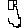
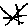
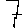

This application uses a Convolutional Neural Network (CNN) trained on the Handwritten Digits and Operators dataset from Kaggle.
The model architecture consists of two convolutional layers (with 32 and 64 filters), max pooling, and dense layers, achieving 97.75% accuracy on the test set. It was trained on approximately 60% of the 300,000 images of handwritten digits (0-9) and mathematical operators (+, -, *, /).



How to use: Draw a digit in the first and third canvas, and an operator (+, -, *, /) in the middle canvas. For best results, try to make your drawings fill most of the canvas area (like in the examples above). Click "Calculate" to see the neural network's predictions and the computed result.
The confidence percentages show how certain the model is about each prediction. Higher percentages indicate greater confidence in the recognition.